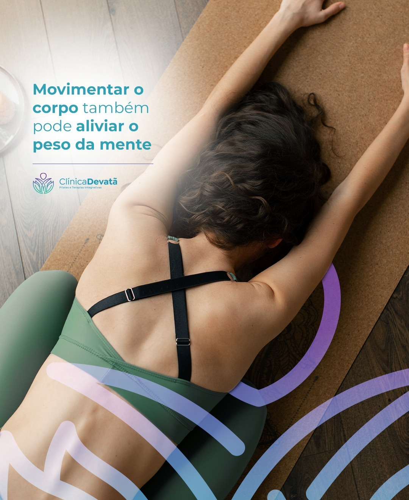
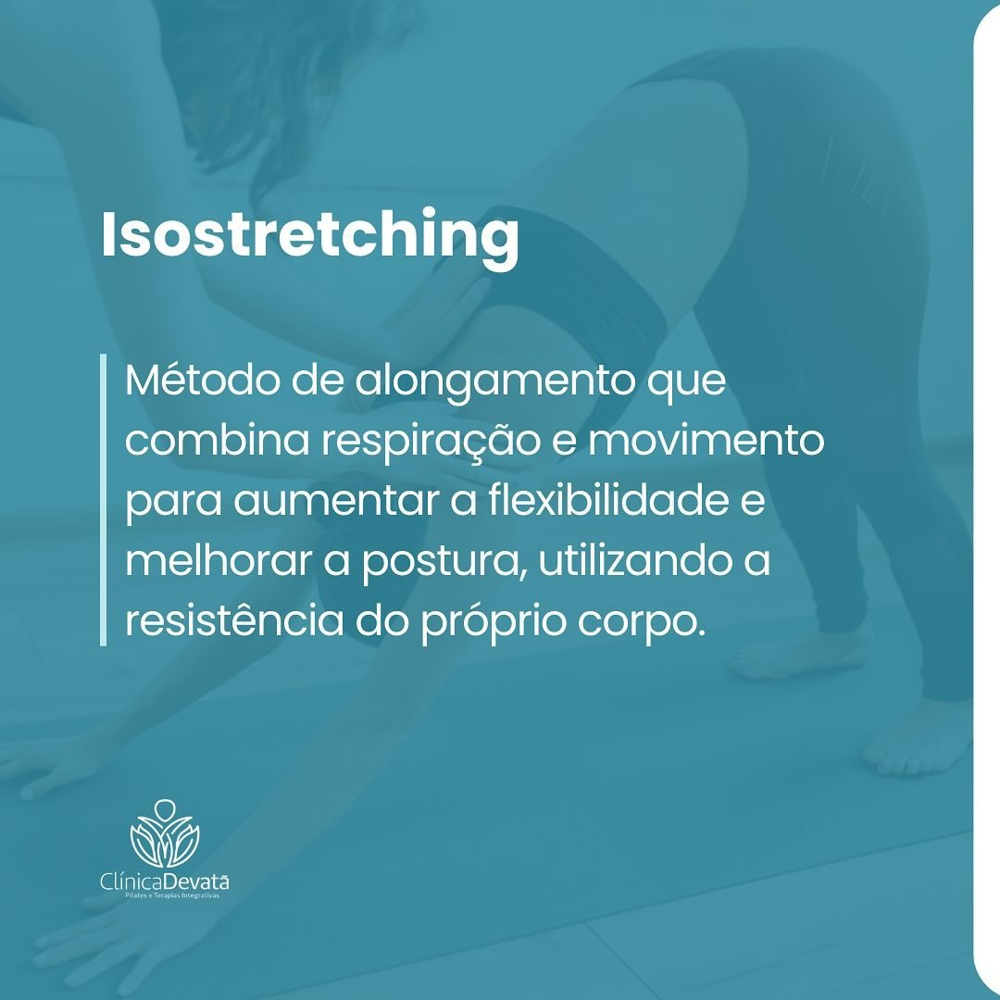

Nota publicada em 21/09/2026.
Alto do Ipiranga · Ribeirão Preto
Fisioterapia e Pilates para uma vida em movimento.
Atendimento com agendamento, diferentes modalidades de Pilates e uma trajetória reconhecida em Ribeirão Preto.
4,94 na Wellhub290 avaliações na Wellhub2× vencedora Melhor RP

Sobre a clínica
Cuidado clínico e prática orientada em um só lugar.
A Physiopremium atua no Alto do Ipiranga com fisioterapia e diferentes formatos de Pilates, sempre com atendimento agendado.
A clínica combina acompanhamento profissional, estrutura acessível e modalidades capazes de atender diferentes rotinas e objetivos.
Reconhecimento local
Escolhida pelos clientes e reconhecida pela cidade.
Os dados abaixo foram publicados pela Wellhub e pelo prêmio Melhor RP e podem mudar ao longo do tempo.
Volume exibido pela Wellhub na mesma data.
Vencedora da categoria Pilates.
Modalidades
Movimento adaptado ao seu momento.
Consulte a indicação, o formato da aula e a disponibilidade diretamente com a clínica.

Cuidado clínico
Fisioterapia
Avaliação e acompanhamento profissional para função, movimento e recuperação.

Studio e clínico
Pilates
Pilates funcional, clínico, solo e studio com orientação e progressão individual.

Variação
Bola Pilates
Modalidade publicada pela clínica para ampliar possibilidades de movimento e controle corporal.
Experiência Physiopremium
Uma rotina de cuidado que cabe na vida real.
O atendimento começa pela conversa, passa pela orientação profissional e ganha consistência com acompanhamento.
Consulte horários e escolha a melhor disponibilidade.
Entenda qual modalidade conversa com seus objetivos.
Evolua com orientação e regularidade.

Acesso e comodidades
Uma estrutura pensada para receber bem.
A página da Wellhub informa atendimento com agendamento, acessibilidade e comodidades. Confirme as condições atuais antes da visita.
- Atendimento com agendamento
- Informações de acessibilidade na Wellhub
- Opções de acesso por Wellhub e TotalPass
Depoimentos do Google
Atendimento, ambiente e professores aparecem nos relatos.
Avaliações exibidas no conteúdo visível, sem marcação estruturada.
“Fui bem atendido por uma equipe que não encontrei em nenhum outro lugar.”
“Ótima clínica, ambiente agradável e profissionais super atenciosas.”
“Excelente Pilates com os melhores professores.”
Dúvidas frequentes
Informações para organizar sua visita.
Quais modalidades são oferecidas?
Fisioterapia, Pilates funcional, clínico, solo e studio, além de Bola Pilates.
É necessário agendamento?
Sim. Consulte a disponibilidade pelo WhatsApp.
Quais são os horários publicados?
Segunda e quarta, 7h–20h; terça e quinta, 7h–20h30; sexta, 7h–17h; sábado, 7h–12h.
Onde fica a clínica?
Rua Rio Branco, 335, Alto do Ipiranga, Ribeirão Preto.
Contato
Agende seu atendimento na Physiopremium.
Converse com a equipe para confirmar modalidade, horário e disponibilidade.
- Endereço
- Rua Rio Branco, 335, Alto do Ipiranga, Ribeirão Preto - SP, 14055-580
- +55 16 99452-1744
- @physiopremium
- Agenda
- Atendimento mediante agendamento